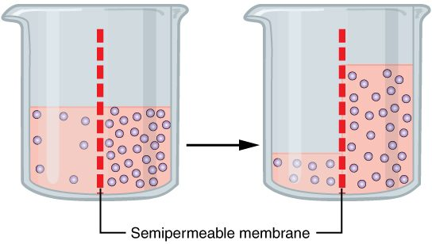

Oxygen gets from your lungs into your blood, and water gets into and out of every one of your cells, without any pump pushing them. Two processes do this work: diffusion and osmosis. This page explains both from the ground up: why particles spread out on their own, what makes them spread faster or slower, what a semipermeable membrane is, why water moves toward the side with more dissolved particles, and what osmotic pressure measures. Both ideas come back in your lungs, your blood vessels, your kidneys and every cell you study.
Random motion: the engine behind diffusion
Drop a little food dye into a glass of still water and leave it. Nobody stirs it, yet within an hour the color has spread through the whole glass. Nothing pushed the dye. It spread because its particles never stop moving.
In the topic on energy you saw that heat is the kinetic energy of randomly moving particles. At body temperature, a water molecule moves at hundreds of meters per second. In a liquid, though, it cannot travel far in a straight line: it bumps into its neighbors trillions of times each second, and every collision sends it off in a new, random direction. Each dissolved particle does the same. Its path is a random zigzag, with no preferred direction.
That random zigzag is all diffusion needs. No energy input is required beyond the heat your body already has.
Diffusion and net diffusion
Picture a line across the glass, with many dye particles on the left and few on the right. Every particle moves at random, so any single particle is as likely to cross the line leftward as rightward. But there are more particles on the left to start with, so more of them happen to cross from left to right each second than cross back. The result is a steady overall movement from the crowded side to the sparse side.
Diffusion (dif- = apart, fus- = pour) is the spreading of particles from where they are more concentrated to where they are less concentrated, driven by their own random motion. In the language of the last topic, particles diffuse down their concentration gradient.
The word net matters here. Net diffusion is the overall movement that is left when you subtract the particles going one way from those going the other way. Particles always cross in both directions. Net diffusion is the difference.
Follow Figure 1 from left to right. Net diffusion continues while a concentration gradient exists. Once the particles are evenly spread, the gradient is gone and net diffusion stops. The particles do not stop, though. They keep moving and crossing in both directions at equal rates. This balanced state is called equilibrium, the same word you met for reactions whose forward and reverse rates are equal.
Every substance follows its own gradient
Each kind of particle diffuses down its own concentration gradient, whatever the others are doing. In your lungs, the air holds more oxygen than the blood arriving from your body, while that blood holds more carbon dioxide than the air. So at the same moment, across the same thin barrier, oxygen diffuses into your blood and carbon dioxide diffuses out of it.
A gradient keeps working only while something maintains it. In your lungs, fresh air keeps oxygen high on the air side, and flowing blood keeps carrying the newly arrived oxygen away. Stop the breathing or stop the blood flow and the gradient disappears within moments.
What sets the rate of diffusion
Sugar dissolves and spreads faster in hot tea than in iced tea. A drop of dye reaches the far side of a thimble long before it reaches the far side of a bathtub. Each of these is one factor that sets how fast net diffusion happens.
- Steepness of the gradient. A bigger concentration difference, or the same difference over a shorter distance, gives faster net diffusion. As the gradient flattens, net diffusion slows.
- Temperature. Warmer particles move faster, so they spread faster. Your body temperature is nearly constant, so this factor rarely changes in you.
- Size of the particle. Small, light particles such as oxygen spread faster than large ones such as proteins.
- Surface area. The surface area is the area of the surface the particles cross. Double it and twice as many particles can cross each second.
- Diffusion distance. The diffusion distance is how far the particles have to travel, for example the thickness of a barrier. A thicker barrier slows net diffusion.
- How easily the particle crosses a barrier. When a barrier lies in the way, what it lets through, and how readily, matters. You will see this in the membrane section below.
Distance is the factor that limits diffusion
Diffusion is a random walk, and a random walk is fast over short distances and extremely slow over long ones. The time it takes grows with the square of the distance: twice the distance takes about four times as long, and ten times the distance takes about a hundred times as long. The table gives rough times for oxygen spreading through water at body temperature.
| Distance | Rough time for oxygen to diffuse that far |
|---|---|
| 1 micrometer (a thousandth of a millimeter) | Less than a thousandth of a second |
| 10 micrometers (about one cell's width) | About two hundredths of a second |
| 1 millimeter | About 3 minutes |
| 1 centimeter | About 5 hours |
| 1 meter (heart to toe) | About 5 years |
Worked example: doubling the distance
Problem. A substance takes 2 seconds to diffuse across a layer of tissue. Disease makes the layer twice as thick. Roughly how long does the same trip take now?
- Write the rule. Diffusion time grows with the square of the distance.
- Write the change in distance. New distance = 2 × old distance.
- Square it. 2 × 2 = 4, so the time becomes 4 times longer.
- Calculate. 2 seconds × 4 = 8 seconds.
Answer. About 8 seconds: doubling the distance made the trip four times slower, not twice as slow.
This one rule explains a lot of your structure.
- Your lungs. The barrier between the air and your blood is extremely thin, well under a thousandth of a millimeter, and it covers an enormous surface area, roughly 70 square meters, about the floor of a small apartment. Short distance and huge area make diffusion fast. When fluid collects in the lungs, it thickens that barrier, and less oxygen gets into the blood each minute.
- Your capillaries. Most of your cells sit within a few cell widths of a capillary. Over that distance diffusion takes a fraction of a second.
- Your circulation. Over the distance from your heart to your toes, diffusion would take years. That is why long-distance transport depends on bulk flow, the pumping of blood that you met in the last topic. Bulk flow carries materials the long way; diffusion carries them the last few micrometers.
Semipermeable membranes
A tea bag lets water and the flavor molecules through, but it holds back the tea leaves. It is a barrier that lets some things pass and not others.
A membrane is a thin sheet that separates two regions. A semipermeable membrane (semi- = partly, per- = through, mea- = pass) lets some substances cross and blocks others. It is also called a selectively permeable membrane. Which substances cross depends on the membrane. Common patterns:
- Water and small particles without a charge, such as oxygen and carbon dioxide, usually cross easily.
- Large particles, such as proteins, usually cannot cross.
- Ions, with their electric charge, cross many membranes poorly unless the membrane has special routes for them.
Every one of your cells is wrapped in a semipermeable membrane. It lets water, oxygen and carbon dioxide cross readily, but it holds back proteins and keeps most ions from crossing freely. Two topics from now, you study that membrane in detail: what it is made of and how its proteins decide what crosses. For now, you need only the idea of a barrier that is open to water but closed to some dissolved particles.
When a semipermeable membrane blocks a dissolved particle, that particle cannot diffuse across it, however steep its gradient. That sets up the special case that makes osmosis possible.
Osmosis: water moves toward more dissolved particles
Sprinkle salt on slices of cucumber and wait ten minutes. Water beads on the surface and the slices go limp. Put the same slices in plain water and they stay crisp. The salt did not pull the water out by force. Water moved across the membranes of the cucumber's cells toward the salty side.
Osmosis (osmos = a push) is the net movement of water across a semipermeable membrane from the side with fewer dissolved particles to the side with more. In the terms of the water chapter, water moves from the solution with lower osmolarity toward the solution with higher osmolarity. A short way to remember it: water follows solute.
Look at the left beaker in Figure 2. A membrane that lets water through, but not the solute, divides it. One side holds more dissolved particles. The membrane has tiny pores that water fills but the solute cannot enter. At the mouth of each pore on the concentrated side, the dissolved particles bounce off and stay out, and that lowers the pressure of the water inside the pore. The water in the pore is now pushed harder from the dilute side than from the concentrated side. So water streams through the pores toward the concentrated side. This stream is bulk flow, driven by a pressure difference that the held-back solute creates. The more held-back particles, the bigger that difference, which is why water follows solute. In the right beaker, the water level on the concentrated side has risen and its solution has become more dilute.

Three rules for predicting osmosis
- Count particles, not grams. Osmosis depends on the number of dissolved particles, which is what osmolarity counts. A millimole of glucose gives one particle, and a millimole of sodium chloride gives two (one sodium ion and one chloride ion). The kind of particle does not matter; the number does.
- Only particles that cannot cross count. If a solute crosses the membrane freely, it diffuses down its own gradient until it is equally concentrated on both sides. Then it no longer makes one side different from the other, and it causes no lasting water movement. Only particles the membrane holds back keep water moving.
- Net water movement stops when there is no difference to drive it. That happens when the two sides reach the same osmolarity, or when a pressure pushing the other way balances the pull, as the next section shows.
Worked example: which way does water move?
Problem. A membrane that lets water cross, but not sodium chloride or glucose, separates two solutions. Side A holds 100 mmol/L sodium chloride. Side B holds 150 mmol/L glucose. Which way does water move?
- Count particles on side A. Each sodium chloride gives 2 particles: 100 × 2 = 200 mOsm/L.
- Count particles on side B. Each glucose gives 1 particle: 150 × 1 = 150 mOsm/L.
- Check which particles can cross. Neither solute crosses, so both count.
- Compare. Side A has more dissolved particles (200 against 150 mOsm/L).
- Apply the rule. Water follows solute, so water moves from side B into side A.
Answer. Water moves from B to A, even though B has more millimoles of solute per liter. What counts is the number of particles.
Osmosis and your cells
Your cells are full of dissolved particles that their membranes hold back, and the fluid around them normally has almost exactly the same osmolarity, about 290 mOsm/L. So normally there is no net water movement, and your cells keep a steady size.
- Place blood cells in pure water, and the fluid outside has far fewer particles than the inside of the cells. Water moves in, the cells swell, and many burst.
- Place them in very salty water, and the outside has more particles. Water moves out, and the cells shrink and wrinkle.
- Place them in 0.9% sodium chloride, which matches their osmolarity, and they keep their size. That is why this solution is a standard IV fluid.
The topic on how substances cross the membrane returns to this in full, with the names for these three kinds of solution.
Osmotic pressure
Go back to the divided beaker. As water moves into the concentrated side, its level rises. The taller column of fluid now has a higher hydrostatic pressure at the membrane, and that pressure pushes water back the other way. Eventually the push back matches the osmotic pull, and the level stops rising (Figure 3).
Osmotic pressure is the pressure you would have to apply to a solution to stop water moving into it by osmosis from pure water across a semipermeable membrane. It is a measure of how strongly a solution draws water in. The more dissolved particles a solution holds, the higher its osmotic pressure.
Two points keep this idea straight.
- Osmotic pressure is a property of the solution. Pure water has an osmotic pressure of zero. The pressure only acts, and water only moves, when a semipermeable membrane separates two solutions with different osmotic pressures.
- Water moves toward the side with the higher osmotic pressure. That is the opposite of hydrostatic pressure, which pushes fluid away from the higher side. The comparison table below lines the two up.
How big it is
Osmotic pressure is surprisingly large. At body temperature, every 1 mOsm/L of solute that the membrane holds back gives about 19 mm Hg of osmotic pressure.
Worked example: a small difference makes a big pressure
Problem. Two solutions are separated by a membrane that lets only water through. One is 290 mOsm/L and the other is 300 mOsm/L. About how large is the difference in osmotic pressure?
- Find the difference in osmolarity. 300 − 290 = 10 mOsm/L.
- Use the conversion. Each 1 mOsm/L gives about 19 mm Hg.
- Multiply. 10 × 19 = 190 mm Hg.
- Compare. 190 mm Hg is more than the peak pressure in your large arteries, about 120 mm Hg.
Answer. About 190 mm Hg. A difference of only about 3% in particle count creates a pressure larger than your blood pressure.
This is why your body holds the osmolarity of its fluids within a narrow range, and why even small changes move large amounts of water into or out of your cells.
| Hydrostatic pressure | Osmotic pressure | |
|---|---|---|
| What it is | The push a fluid exerts, for example against a wall or a membrane | The pressure needed to stop water moving into a solution by osmosis |
| What sets it | The weight of the fluid above, or a pump such as your heart | The number of dissolved particles that cannot cross the membrane |
| Direction it moves water | Away from the side where it is higher | Toward the side where it is higher |
| Body example | Blood pressure pushing fluid out of a capillary | Proteins in the blood that the capillary wall holds back drawing fluid in |
In your capillaries, these two pressures work against each other, and the balance between them sets how much fluid leaves your blood. The chapter on blood vessels returns to it in full, including how that fluid gets back.
Putting it together: diffusion, osmosis and bulk flow
Three kinds of movement carry materials through your body. They are easy to mix up, so the table lines them up.
| Diffusion | Osmosis | Bulk flow | |
|---|---|---|---|
| What moves | Dissolved particles, each kind on its own | Water only | A whole fluid, with everything in it |
| What drives it | A concentration gradient of that particle | A difference in dissolved particles the membrane holds back | A pressure gradient |
| Direction | From higher to lower concentration of the particle | Toward the side with more dissolved particles | From higher to lower pressure |
| Membrane needed? | No, but one can limit it | Yes, a semipermeable one | No |
| Distance it works over | Short: micrometers | Short: across a membrane | Long: across the whole body |
| Body example | Oxygen moving from your lungs into your blood | Water moving into your cells when your blood is diluted | Blood pumped from your heart to your toes |
The runner who drank too much water
A marathon runner drinks plain water at every station, far more than she loses in sweat. Here is what happens, step by step.
- The extra water enters her blood and dilutes it. The osmolarity of her blood, and of the fluid around her cells, falls.
- Her cells still hold the same dissolved particles, which their membranes hold back. Now the inside of each cell has more dissolved particles than the fluid around it.
- Water follows solute: it moves into her cells by osmosis, and the cells swell.
- Her brain sits inside the rigid skull, so there is little room to swell. Pressure inside the skull rises, and she becomes confused and may have seizures.
- A small volume of concentrated salt solution given through an IV raises the osmolarity of her blood. Water moves back out of her brain cells, and they shrink toward their normal size.
Each step is osmosis at work. Nothing pumped the water; it moved because the membranes around her cells let water cross but held dissolved particles back.